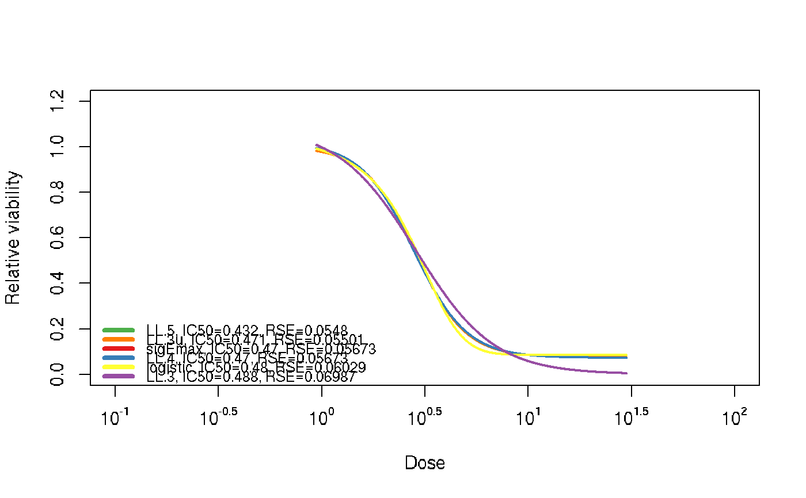

plot dose response curve from fitOneExp() result
plotOneExp(fitRes, ind2plot = NA, cols = NA, pcols = NA, type = "plot", style = "full", h = NULL, tag = NA, main = NA, cex.main = 1, xlab = NA, ylab = NA, ylim = NA, xlim = NA, show = "both", cexLegend = NA, posLegend = "bottomleft", showTopN = NA, lwd = 2, lty = 1, cex.axis = 1, cex.lab = 1, addOutlierLegend = TRUE, axes = TRUE)
| fitRes | return value from fitOneExp(). |
|---|---|
| ind2plot | index for the models that will be plotted; default is NA which leads to all curves available; when specified as 'best', the best model is selected. |
| cols | color for the lines. If cols is of length 1, then all lines (representing different models) have the same color as specified; if cols has a length larger than 1, the function further checks if this length equals the number of fitted models. If this is the case, cols specifies colors for all models. Otherwise, default color is used. |
| pcols | cols for points, similar to cols. |
| type | the plot type. The user can specify more flexibly by specifying a vector of entities to plot including: either plot or line; when specified as line, it will only adds to an existing figure; When length(ind2plot) > 1, type will be reset to plot which means the first curve will be made with plot() and additional ones with lines(). plot: to start a new figure line: dose response curve points: observed data points control: control data points legend: legend for outlier status |
| style | deprecated. use type instead. |
| h | horizontal line added to the figure, i.e. indicating IC50, IC70. |
| tag | tag before main. |
| main | main. |
| cex.main | cex.main to adjust main title size. |
| xlab | xlab. |
| ylab | ylab. |
| ylim | ylim. |
| xlim | xlim. |
| show | whether to show RSE ('RSE'), IC50 ('IC50'), both ('both') or nothing ('None') in addition to the best model as legend. |
| cexLegend | legend cex. |
| posLegend | position of legend for model information. |
| showTopN | if specified show best N model in figure to avoid busy plotting; otherwise show all successful models. |
| lwd | line width for the curves. |
| lty | line type for the curves. |
| cex.axis | cex for axis annotation. |
| cex.lab | cex for axis label. |
| addOutlierLegend | whether to add legend for outlier status. |
| axes | whether to add axes. only effective if type='plot'. |
fitExp <- fitOneExp(ryegrass[, c(2, 1)], drug = '', cellLine = '', unit = '', models = c('sigEmax', 'LL.4', 'LL.5', 'LL.3', 'LL.3u', 'logistic'), alpha = 0.05, interpolation = TRUE)#>#>plotOneExp(fitExp, main = '')#> Warning: cols do not have the same length as number of models; using the cols attached to the fitted object!